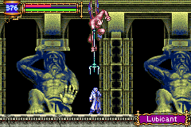

|
Trick
* Trick Menu *
- Mina Hint -
- Easy Exp -
- Iron Golem -
- Chronomage -
- Pass Chronomage without Galamoth Soul -
- Water Fall -
- Killer Doll -
- Giant Bat Fire -
- Easy Money -
- Hard Game -
- Julius -
- New Game in Other Mode -
Mina Hint
เมื่อกลับไปคุยกับ Mina ที่ด้านหน้าปราสาท
เธอจะมีคำแนะนำที่ Arikado ฝากเอาไว้มาบอก
อีกทั้งเธอยังเติม HP และ MP ให้กับ Soma จนเต็มอีกด้วย
Easy Exp
แหวน Shaman's Ring จะเพิ่ม Exp ให้ในขณะที่เดิน
แต่หากเดินอยู่กับที่ เช่น เดินชนกำแพง จะไม่ได้รับ Exp
แต่มีอยู่สถานที่หนึ่ง ซึ่งสามารถเดินเป็นวงกลมได้ โดยการกดปุ่มเพียงปุ่มเดียว
นั่นคือ ห้องที่ Chronomage อาศัยอยู่
เมื่อเดินเข้าไปในห้องนั้น จะถูก Chronomage ใช้นาฬิกา ทำให้หลุดออกมาอยู่หน้าห้อง
ดังนั้น หากกดปุ่ม "ซ้าย" ค้างไว้ และสวมใส่ Shaman's Ring
จะทำให้เดินวนอยู่เรื่อยๆ และได้ Exp เพิ่มขึ้นตลอดเวลา
หาอะไรทับปุ่ม "ซ้าย" ไว้ แล้วไปทำธุระอย่างอื่น เมื่อกลับมา จะได้
Level ที่สูงขึ้น
* Note : หากมีโซล Galamoth อยู่แล้ว ให้กด OFF เพื่อไม่ใช้โซลนั้น
Iron Golem

Iron Golem จะโจมตีอย่างไรก็ลดเพียงแค่ 1
แต่ Iron Golem มี HP สูงถึง 9,999
ดังนั้นจึงต้องใช้โซล Killer Mantle ที่ทำให้โจมตีเพียงครั้งเดียวก็ตาย
โซลนี้จะทำการสลับระหว่าง HP และ MP ของศัตรู
นอกจาก Iron Golem แล้ว ยังสามารถใช้ฆ่า Red Minotaur ได้อีกด้วย
Chronomage
(ปรกติจะโดนย้อนเวลา)
(มีโซล Galamoth แล้ว)
ปรกติหากเข้าไปเจอ Chronomage จะโดนย้อนเวลากลับไปตอนก่อนเข้า
(ก็คือไม่สามารถผ่านเข้าไปได้)
แต่หากมีโซล Galamoth จะไม่โดนเปลี่ยนแปลงเวลา
หากฆ่ามันจะได้โซล Chronomage ใช้หยุดเวลาได้
(นำไปหยุดเวลาทำให้ Sky Fish ช้าลงได้)
Pass Chronomage without Galamoth Soul
เมื่อเริ่มเล่นเกมใหม่โดยใช้เซฟเดิม
เมื่อผ่านมาถึง Chronomage ครั้งแรกจะยังไม่มีโซล Galamoth
ทำให้ยังไม่สามารถผ่านไปได้
แต่หากมีโซล Chronomage (มีติดมาตั้งแรกเล่นรอบแรก)
ให้กดใช้ Chronomage กับ Chronomage จะหยุดเวลาได้
ทำให้สามารถผ่านมันไปได้ !!!
Water Fall
บริเวณน้ำตกจะไม่สามารถเข้าไปได้ ต้องแปลงร่างและพุ่งชนเข้าไป
(แปลงร่าง !!!)
(พุ่งเข้าไปเลย)
 (เข้าไปได้แล้ว)
(เข้าไปได้แล้ว)
จริงๆ แล้วบริเวณน้ำตกจะมีรูปภาพบอกใบ้แสดงไว้ว่าจำเป็นต้องใช้ Soul อะไร
ซึ่งมีอยู่ 3 โซล คือ Curly, Devil, Manticore ที่ทำให้สามารถแปลงร่างได้
อีกทั้งต้องสวมใส่โซล Undine ด้วย เพื่อให้สามารถยืนบนน้ำได้
Killer Doll
ไว้สำหรับหันเหความสนใจของศัตรู ทำให้สามารถโจมตีศัตรูได้อย่างสบายใจ
หากมีใช้ในช่วงแรกๆ ที่ Level ยังไม่สูงมาก จะเล่นได้สบาย
Giant Bat Fire
ปรกติเมื่อแปลงร่างโดยใช้โซล Giant Bat จะไม่สามารถโจมตีได้
หากสวมใส่โซล Flame Demon ด้วย จะสามารถยิงลูกไฟได้
และแน่นอน เมื่อเป็นค้างคาวก็สามารถใช้โซล Bat ได้ด้วย
Easy Money
การเก็บเงินเพื่อไปซื้อ Soul Eater Ring เป็นเรื่องน่าลำบากใจยิ่งนัก
เนื่องด้วย Soul Eater Ring มีราคาสูงถึง 300,000G เลยทีเดียว
วิธีการเก็บเงินแบบรวดเร็ว มีทั้งหมด 3 วิธีด้วยกัน ดังนี้
1. ใส่ Gold Ring เพื่อเพิ่มโอกาสในการได้เงิน และได้ครั้งละมากๆ
โดยจะได้เป็นเงินถุงใหญ่ 500G หรือ 1,000G
ฉะนั้นให้ไปหาสถานที่ที่มีศัตรูอยู่เป็นจำนวนมาก และสามารถฆ่าได้ง่ายๆ
2. เอาอาวุธไปขาย ซึ่งอาวุธบางชิ้นนั้น มีราคาที่สูงมากๆ
เช่น ดาบ Muramasa มีราคาสูงถึง 30,000G เลยทีเดียว ได้จากการฆ่า Lubicant

ซึ่งอาศัยอยู่ใน Zone : The Arena, Top Floor
แต่สิ่งที่จำเป็นก็คือ Rare Ring เพื่อเพิ่มโอกาสในการ Drop Item ของศัตรู
3. ใช้โซล Mimic ซึ่งโซลนี้จะมีความสามารถพิเศษคือ
เมื่อ HP ลด 1 จะได้เงินมา 5G
หาโซล Mimic ได้จากในห้อง WallSecret05
ดังนั้น หาก HP ลดเยอะมากๆ ก็จะได้เงินเยอะมากๆ ด้วย
สถานที่แนะนำคือ Zone : Clock Tower ใกล้ๆ กับห้อง Save จะมีหนาม
ให้ลงไปในหนาม เมื่อ HP ใกล้หมด ก็กลับห้อง Save เพื่อเติม HP
ทำสลับไปมา ไม่เกินครึ่งชั่วโมง ก็จะมีเงินไปซื้อ Soul Eater Ring ได้สบาย
Hard Game
หากเล่นเกมจบ 1 ครั้ง สามารถเริ่มเล่นใหม่ได้ในแบบ Hard
ซึ่งศัตรูจะเก่งขึ้น แต่ Soma จะมี Item รวมทั้งโซลจากเซฟเดิมมา (เกือบ)
ทั้งหมด
ยกเว้นแต่โซลตามเนื้อเรื่องเท่านั้น
และเมื่อเล่นแบบ Hard จะมี Item พิเศษ ให้อีกด้วย
Julius
สามารถเลือกเล่นเป็น Julius ได้ หากเล่น Soma จบแล้ว 1 รอบ
เมื่อเลือกเล่นเกมใหม่ ให้ใส่ชื่อว่า JULIUS ก็สามารถเล่นเป็น Julius ได้
New Game in Other Mode
เมื่อเล่นเกมจบ 1 รอบ นอกจากจะใส่ชื่อ JULIUS และเล่นเป็น Julius ได้แล้ว
ยังสามารถใส่ชื่ออื่น เพื่อให้มีความแตกต่างไปจากเดิมได้อีก คือ
ใส่ชื่อ NOSOUL จะเริ่มเล่นเกมใหม่โดยใช้โซลไม่ได้
ใส่ชื่อ NOUSE จะเริ่มเล่นเกมใหม่โดยใช้ Item ไม่ได้
ซึ่งจะเพิ่มระดับความยากของเกมให้มากขึ้นไปอีก
|